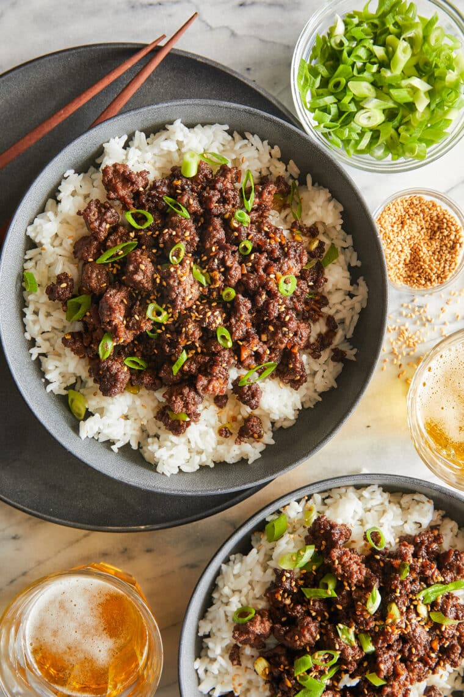

Korean Beef

Description
This recipe is a special twist on the traditional Korean dish, bulgogi, but as a cheater version, we are swapping out thin slices of sirloin with ground beef. Bulgogi is also marinated overnight to enhance its flavors and tenderness but with this quick ground beef version, you can have the same flavors in lightning speed time. (Damn Delicious)
Ingredients
- 1/4 cup brown sugar, packed
- 1/4 cup reduced sodium soy sauce
- 2 tsp sesame oil
- 1/2 tsp crushed red-pepper flakes, or more to taste
- 1/4 tsp ground ginger
- 1 tbsp vegetable oil
- 3 cloves garlic, minced
- 1 pound ground beef
- 2 green onions, thinly sliced
- 1/4 tsp sesame seeds
Steps
- In a small bowl, whisk together brown sugar, soy sauce, sesame oil, red pepper flakes and ginger.
- Heat vegetable oil in a large cast iron skillet over medium high heat. Add garlic and cook, stirring constantly, until fragrant, about 1 minute. Add ground beef and cook until browned, about 3-5 minutes, making sure to crumble the beef as it cooks; drain excess fat.
- Stir in soy sauce mixture and green onions until well combined, allowing to simmer until heated through, about 2 minutes.
- Serve immediately, garnished with green onion and sesame seeds, if desired.